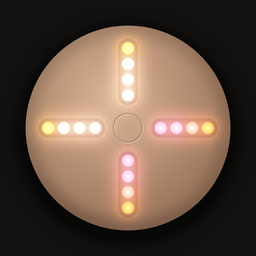

Stem808
Take any song apart. Split it into vocals, drums, bass and more, right on your iPhone, then remix it with your fingers.
Need help?
Questions, bugs or ideas: write to
SUPPORT_EMAILI usually reply within a couple of days.
Frequently asked questions
Which songs can I use?
Songs you own as files: purchased downloads (for example from Bandcamp or the iTunes Store), songs synced to your iPhone from a computer, your own recordings, or audio files shared from other apps. Import them from Files, your music library, or the Share menu.
Why can't I import songs from Apple Music or Spotify?
Streaming services protect their songs with DRM, so no app can read the audio. That's a limit of the services, not of Stem808.
How long does separating a song take?
Usually under a minute for a typical song on a recent iPhone. The very first separation takes a little longer while the app prepares its AI model. Keep the app open while it works.
Does my music get uploaded anywhere?
No. Separation runs entirely on your iPhone. Stem808 has no accounts and no servers, and your songs never leave your device. See the privacy policy.
How do I use the device?
Each arm is one stem: top vocals, right drums, bottom bass, left everything else. Tap or slide along an arm to set its volume (one light is mute, four is full) and hold an arm to solo it. Tap the center to play or pause, hold it for effects. Drag around the ring to scratch, tap it to jump. Replay the tutorial anytime from the library's ••• menu.
What does Stem808 Pro include?
Unlimited separations, high-quality separation, lossless stems, recording your mixes and sharing stems. It's a one-time purchase, not a subscription. The free version includes 2 separations, and songs you've separated stay yours to play and remix.
I bought Pro but it's locked on a new or reset iPhone.
Open the library, tap ••• → Settings → Restore Purchases, signed in with the same Apple Account you bought it with.
How do I free up space?
The library shows how much space each song uses. Long-press a song and choose Delete Stems to keep the song but remove its stems, or swipe left to delete it entirely.